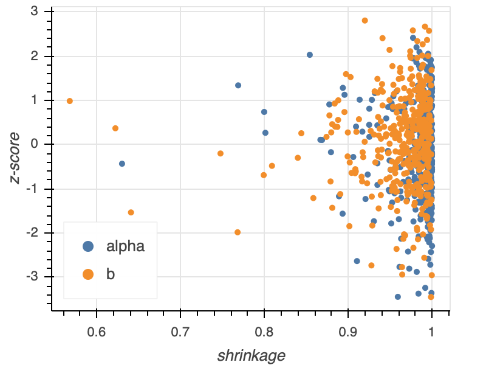
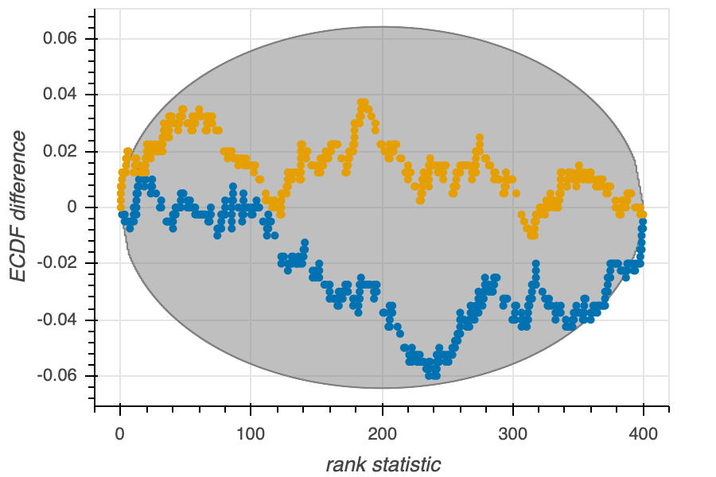

Principled analysis pipelines
This lesson is based heavily onthis articleby Michael Betancourt.
Building a workflow
We have talked at length about Bayesian model building. The steps were roughly as follows.
Propose a simple generative model.
Perform prior predictive checks.
Iterate on 1 and 2 until satisfied with prior predictive checks.
Perform MCMC to get samples out of the posterior.
Perform diagnostics to make sure the sampling worked ok.
Iterate on 4 and 5, possibly uncentering and/or changing sampling settings, until satisfied with the diagnostics. If not satisfied, diagnose the problems with the model and go back to (1) and proceed.
Perform posterior predictive checks.
If unsatisfied, update the model with more flexibility. Make sure the updated model has the previous model as a special case or limit. Go to (2).
If satisfied, stop and report results.
We do have a bit missing in this work flow. There are other checks we should do with our modeling and inference procedure to ensure we will get reliable statistical results. First, we should use simulated data for which the ground truth (the actual parameter values) is known, and verify that our inference procedure can capture the ground truth. We should ensure this is the case for any conceivable data set we throw at our inference procedure. Second, we should make sure that our model is such that we can actually learn from the experiment. That is, we should ensure that the posterior is more concentrated around the ground truth than the prior.
In this lecture, we will discuss strategies to approach these two problems.
References and terminology
I will first describe simulation-based calibration (SBC). I encourage you to read more about how it works, starting with the Stan documentation. You should also refer to the original paper on SBC by Talts and coworkers. Finally, you should read this article by Michael Betancourt for a more complete treatment of what I present in this lesson.
The term “simulation-based calibration” is meant to describe the self-consistency check using rank statistics described below. I will be using the term here as an umbrella term for SBC and sensitivity analysis in computing shrinkages and z-scores, also described below. The computational effort for all of these is the same, and they all use the same samples, so I hope this abuse of terminology is forgivable.
Simulation-based calibration
We have performed prior predictive checks on our generative models to ensure that the models produce reasonable data sets. Accepting the model after the prior predictive check, we sample out of the posterior using Markov chain Monte Carlo. We check the samples by performing diagnostics, and then check the ability of the model to generate the actual data set we obtained by doing posterior predictive checks. Importantly, when we look at the posterior, we can compare it to the prior to make sure that the data actually were informative. If the posterior looks too much like the prior, we really have not learned anything. The process is quite powerful, but it would be nice to know if our model makes sense and if we will learn from making measurements before we perform the experiments. Specifically, we would like to know, ante experimentum,
Can our model and sampling procedure capture the real parameter values of the generative process?
Can measured data inform our knowledge of the parameters?
Can our sampling technique handle the model for any conceivable data set we can throw at it?
The approach of simulation-based calibration addresses these questions. The procedure for generated data to use in SBC is as follows.
Draw a parameter set \(\tilde{\theta}\) out of the prior.
Use \(\tilde{\theta}\) to draw a data set \(\tilde{y}\) out of the likelihood.
Perform MCMC sampling of the posterior using \(\tilde{y}\) as if it were the actual measured data set. Draw \(L\) MCMC samples of the parameters.
Do steps 1-3 \(N\) times (hundreds to a thousand is usually a good number).
In step 3, we are using a data set for which we know the underlying parameters that generated it. Because the data were generated using \(\tilde{\theta}\) as the parameter set, \(\tilde{\theta}\) is now the ground truth parameter set. So, we can check to see if we uncover the ground truth in the posterior sampling. We can also check diagnostics for each of the trials to make sure the sampler works properly. Furthermore, we can see if the posterior is narrower than the prior, meaning that the data are informing the posterior. We can also do a check, described below, to ensure the sampler is working properly, which is the main idea in the SBC paper by Talts, et al.
Diagnostics
For each of your \(N\) MCMC calculations, you should perform diagnostics. This will tell you if your sampler is having any obvious problems. It may be the case that some data sets will give it problems while other won’t, and the SBC procedure will help you identify that. If you do this before you analyze your real data, you will know something about what problems you might expect in your analysis.
z-score
To check to see if the posterior encompasses the ground truth, we can compute a z-score for each parameter \(\theta_i\). The z-score is a measure of how close the mean sampled parameter value is to the ground truth, relative to the posterior uncertainty in the parameter value. For each parameter \(\theta_i\),
\begin{align} z_i = \frac{\langle\theta_i\rangle_{\mathrm{post}} - \tilde{\theta}_i}{\sigma_{i,\mathrm{post}}}. \end{align}
Here, \(\langle\theta_i\rangle_{\mathrm{post}}\) is the average value of \(\theta_i\) over all posterior samples, and \(\sigma_{i,\mathrm{post}}\) is the standard deviation of \(\theta_i\) over all posterior samples. As a rule of thumb, the z-score should be symmetric about zero (indicating that there is no bias in under-or-overestimating the ground truth) and should have a magnitude less than four or five. If the z-score is much above that, it is a sign of overfitting, putting posterior probability mass away from the ground truth.
Shrinkage
To have a metric for how informative the data are in the posterior, we define the shrinkage for parameter \(\theta_i\) to be
\begin{align} s_i = 1 - \frac{\sigma_{i,\mathrm{post}}^2}{\sigma_{i,\mathrm{prior}}^2}. \end{align}
Here, \(\sigma_{i,\mathrm{prior}}^2\) is the variance in parameter \(\theta_i\) in the prior distribution. When the posterior is substantially narrower than the prior (meaning that the data have informed the model), the shrinkage tends toward unity since the width of the marginal posterior distribution is much less than that of the prior distribution, or \(\sigma_{i,\mathrm{post}} \ll \sigma_{i,\mathrm{prior}}\).
Shrinkage vs. z-score plot
To graphically assess the shrinkage and z-score, we typically make a shrinkage vs. z-score plot. Each point in the plot represents the results from one of the \(N\) data sets drawn from the generative model. A typical shrinkage vs. z-score plot for a model with two parameters \(\alpha\) and \(b\) is shown below.

Note that the z-scores are symmetric about zero and do not range much above three. The shrinkage is mostly close to unity, and those that drift away do not drift too far. This model permits learning from the data.
Rank statistics
We additionally want to check to make sure the sampler is working properly. That is, in our sampling procedure, we want to make sure we will actually sample the posterior, getting good coverage over parameter space.
In order to check to make sure the sampler is working properly, we can check for self-consistency for a relation that must hold for any statistical model. To derive such a relation, we consider a joint distribution \(\pi(\theta, \tilde{y}, \tilde{\theta})\). Then,
\begin{align} g(\theta) &= \int\mathrm{d}\tilde{y}\,\int\mathrm{d}\tilde{\theta}\,\pi(\theta, \tilde{y}, \tilde{\theta}) = \int\mathrm{d}\tilde{y}\,\int\mathrm{d}\tilde{\theta}\,g(\theta \mid \tilde{y}, \tilde{\theta}) \,\pi(\tilde{y},\tilde{\theta}), \end{align}
where we have used the definition of conditional probability. We note that
\begin{align} g(\theta \mid \tilde{y}, \tilde{\theta}) = g(\theta \mid \tilde{y}) \end{align}
because \(\theta\) is conditioned directly on \(\tilde{y}\) and not directly on \(\tilde{\theta}\), though \(\tilde{y}\) is conditioned on \(\tilde{\theta}\). Using this latter conditioning,
\begin{align} \pi(\tilde{y},\tilde{\theta}) = f(\tilde{y}\mid \tilde{\theta})\,g(\tilde{\theta}). \end{align}
Inserting these expressions into the above integral yields
\begin{align} g(\theta) = \int\mathrm{d}\tilde{y}\,\int\mathrm{d}\tilde{\theta}\,g(\theta \mid \tilde{y}) \,f(\tilde{y}\mid \tilde{\theta})\,g(\tilde{\theta}). \end{align}
In English, the right hand side is the expectation of the posterior over all possible generated data sets. We refer to the right hand side as the data averaged posterior. The left hand side is the prior. For good sampling, there should be no discrepancies between the data averaged posterior and the prior.
This equation says that if we average the generated data sets over the posterior distribution, we recover the prior. This means that the prior sample, \(\tilde{\theta}\), and the \(L\) posterior samples \(\theta\), are sampled out of the same distribution. In other words, if we follow the procedure above for SBC, we should get samples out of the prior.
Talts and coworkers derived a general theorem which says that any the rank statistic of any variable sampled over \(\theta\) is Uniformly distributed. So, we can compute a rank statistic for \(\tilde{\theta}\) over the \(L\) \(\theta\) samples we have, and this rank statistic should be uniformly distributed on the interval \([0, L]\). Since we did a few hundred to a thousand samples, we can check Uniformity of the rank statistics by plotting ECDFs of the rank statistic.
A rank statistic ECDF plot
We can make an ECDF difference plot to test for uniformity. Such a plot is shown below.

The y-axis is the difference between the ECDF of the \(N\) rank statistics and that of a Uniform distribution. The surrounding envelope is the confidence interval of the ECDF difference. If the actual ECDF difference is too much outside of the envelope, then the data averaged posterior and the prior are not equal, and there is a problem with sampling. In the case above, for each of the two parameters, the sampler seems to be performing ok.
Rank statistic histograms
By constructing rank statistic histograms, we can diagnose how the the sampling is failing to capture the true posterior. The series of graphics in Figs. 3-7 of the Talts paper provide an excellent description of how you can perform this diagnosis.
A full principled pipeline
The SBC calculation is expensive. If you want to generate \(N = 1000\) data sets and perform parameter estimation on them, the calculation cost is 1000 times that of performing the parameter estimation on your real data set. However, this cost comes with major benefits. By comparing against a ground truth, you can see if your model can find it for you. By checking the shrinkage, you can see if you can learn from your data. By checking the rank statistics, you can see if the sampler will properly sample the true posterior. And by checking the diagnostics, you will know if there will be any pathological problems.
So, we update the analysis pipeline to include these SBC-based analyses.
Propose a simple generative model.
Perform prior predictive checks.
Iterate on 1 and 2 until satisfied with prior predictive checks.
Perform SBC calculations.
Analyze (by hand and with graphical methods) diagnostics, z-scores, shrinkage, and rank statistics.
If you not pleased with the results of (5), adjust your model and go to (2). Otherwise, continue.
Perform MCMC to get samples out of the posterior.
Perform diagnostics to make sure the sampling worked ok with the real data.
Iterate on 7 and 8, possibly uncentering and/or changing sampling settings, until satisfied with the diagnostics. If not satisfied, diagnose the problems with the model and go back to (1) and proceed. Note that if you do uncentering, you may wish to run though the SBC procedure again.
Perform posterior predictive checks.
If unsatisfied, update the model with more flexibility. Make sure the updated model has the previous model as a special case or limit. Go to (2).
If satisfied, stop and report results.